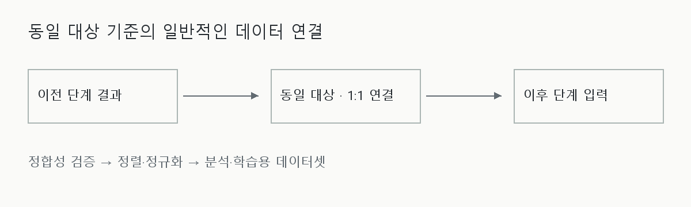

제조 데이터 정합성 검증과 연결
서로 다른 단계에서 수집된 데이터를 동일 대상 기준으로 연결하고, 분석과 모델 학습에 사용할 수 있는 데이터셋으로 정리했습니다. 연결 가능한 데이터인지 먼저 검증하는 것이 핵심입니다.
- 작업: 동일 대상 기준의 단계 간 1:1 연결
- 기준: 메타데이터 정합성·정렬·정규화


문제와 맥락
이전 공정의 결과가 그대로 이후 공정의 입력이 되는 관계에서, 동일 대상 기준으로 두 공정의 데이터를 1:1 연결했습니다. 메타데이터 정합성 검증과 데이터 정렬·정규화를 통해 분석 및 모델 학습에 활용할 데이터셋을 구성했습니다.
단순히 비슷한 시점의 기록을 묶는 것과 같은 대상을 연결하는 것은 다릅니다. 대응 관계가 잘못되면 분석 결과와 학습 목표도 잘못 해석될 수 있어 데이터의 의미와 연결 조건을 먼저 살펴야 했습니다.
수행 역할
메타데이터 정합성 검증, 데이터 추출·연결, 정렬·정규화와 분석용 데이터 구성에 참여했습니다. 모델링과 평가에서 사용할 데이터의 기준을 정리하는 작업을 수행했습니다.
접근 방법
의미와 대응 관계 확인
서로 다른 단계의 기록이 동일 대상을 나타내는지, 비교하려는 정보가 같은 의미를 갖는지 검토했습니다. 대응 관계를 확인할 수 없는 기록을 유효한 학습 쌍으로 가정하지 않는 것이 기본 원칙입니다.
정렬과 정규화
확인된 대응 관계를 기준으로 데이터를 정렬하고 서로 다른 표현을 분석 가능한 기준으로 정리했습니다. 연결 여부와 데이터 품질을 함께 검토하며 데이터셋을 구성했습니다.
분석 목적과 사용 시점 검토
설정값과 실제 관측값의 의미를 구분하고, 분석하려는 문제에 필요한 정보가 어떤 시점에 확보되는지 살폈습니다. 학습 때만 알 수 있는 결과를 실제 예측 입력처럼 취급하지 않도록 데이터의 사용 맥락을 검토했습니다.
적용 범위
산출물은 분석·모델 학습용 데이터셋과 그 구성을 위한 검증·전처리 작업입니다. 정량적인 성능 개선이나 처리 규모, 운영 자동화 성과는 공개하지 않습니다.
설명은 일반적인 관계와 작업 목적에 한정합니다. 실제 공정, 제품, 데이터 구조, 구현과 내부 화면을 재현하는 자료는 포함하지 않습니다.